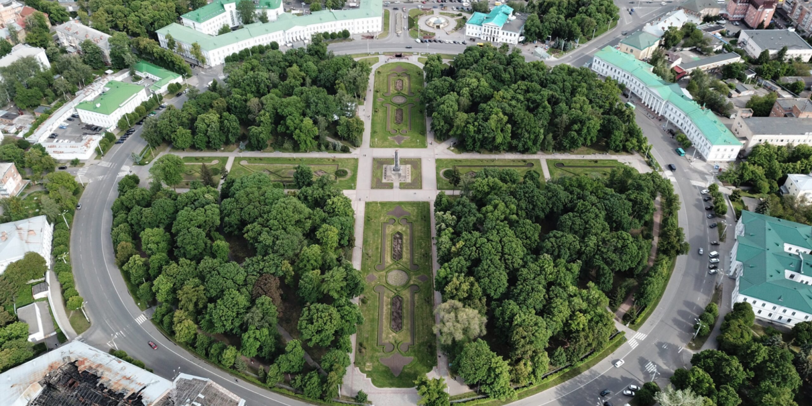

Сучасне місто

Полтава як сучасне місто
Економіка:
- Полтава - це важливий промисловий центр. Тут розташовані підприємства машинобудування, хімічної, харчової та легкої промисловості.
- Місто також є центром торгівлі та сфери послуг.
Культура:
- У Полтаві є багато музеїв, театрів, бібліотек та інших культурних закладів.
- Місто проводить численні фестивалі та культурні заходи, такі як Міжнародний фестиваль лялькових театрів, Фестиваль козацької культури та Етнофестиваль «Гоголево».
Освіта:
- У Полтаві є 20 вищих навчальних закладів, де навчаються понад 50 000 студентів.
- Місто пишається своїми університетами, такими як Полтавський національний технічний університет імені Юрія Кондратюка та Полтавський державний педагогічний університет імені Івана Котляревського.
Інфраструктура:
- У Полтаві добре розвинена транспортна система, що включає автобуси, тролейбуси, трамваї та маршрутні такси.
- Місто має сучасний аеропорт та кілька залізничних вокзалів.
Туризм:
- Полтава - це популярне туристичне місто. Тут є багато історичних пам'яток, таких як Історико-культурний заповідник «Поле Полтавської битви», Спасо-Преображенський собор та Хрестовоздвиженський монастир.
Полтава - це місто, яке постійно розвивається. Міська влада реалізує численні проекти з розвитку інфраструктури, освіти та культури.
Полтава - це чудове місто для життя, навчання, роботи та відпочинку.